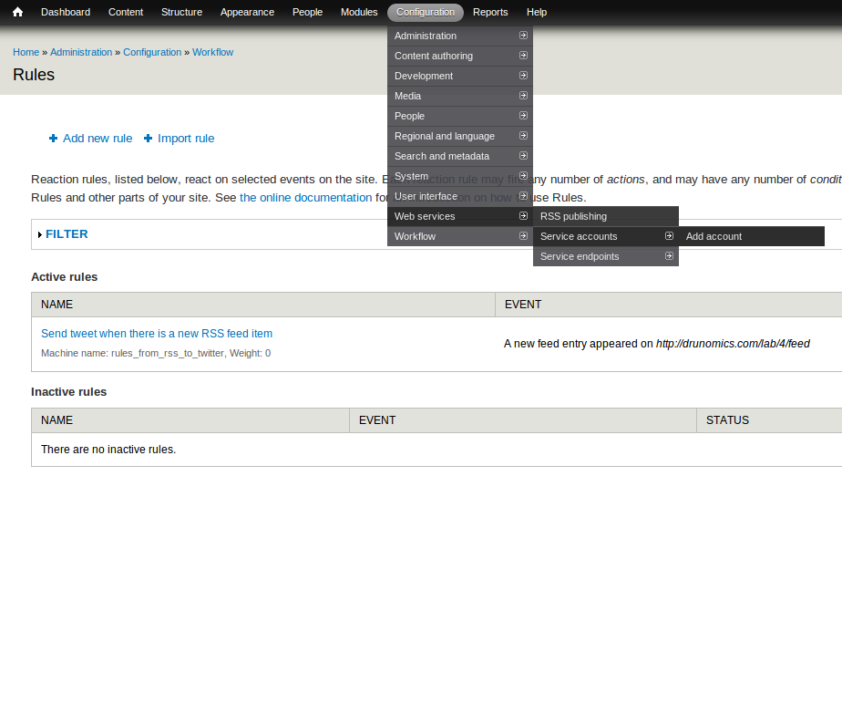
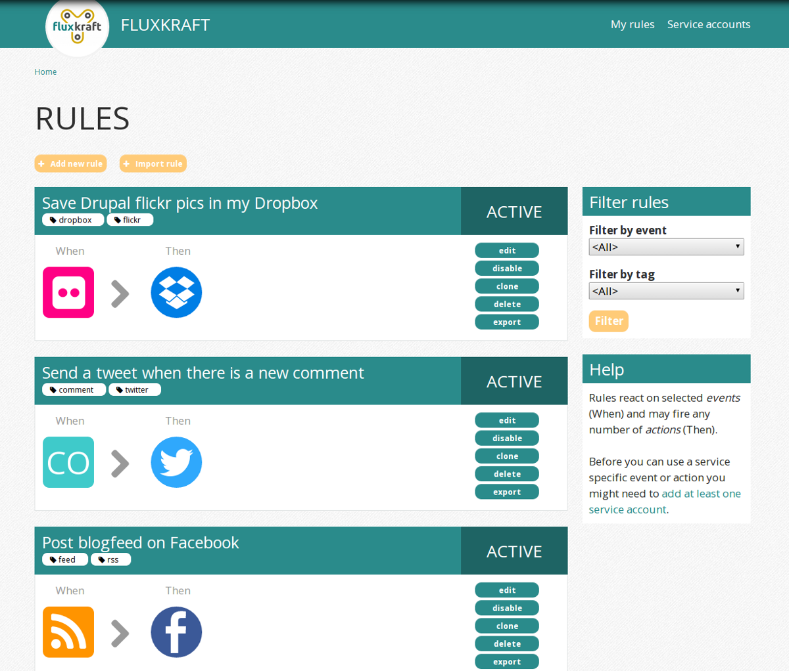

Automating and linking together web services and APIs using the Rules module
Sept 25th, 2013 | by drunomics
Hi, we are ...
- Wolfgang Ziegler (fago), @the_real_fago
- Christian Ziegler (criz), @crizzirc
What can you expect?
No unicorns. No miracles.
But socialmedia, rules, APIs, automation and all together...
The Rules module
Reacting on various events in your Drupal system.Events - Conditions - Actions
But wouldn't it be great to react also on external events?
Or to have actions for creating content on Facebook or Twitter?
Now you can!
Some examples
Posting tweets on Facebook automatically
Saving Facebook posts as Drupal entities
Saving flickr pictures in your dropbox
Why do we need this?
Can't we just use a tool like ifttt.com?More flexibility when using Drupal
- Already hundreds of events, conditions and actions available
- Seamless integration to Drupal`s entity API
It's OpenSource
- Adopt it as you need it
- Integrate your own tools
- No vendor lock-in
You control your data
- Trust yourself, not others
- No need to authenticate third-party applications
Look outside your box
- Don't forget about your content outside your CMS
- Interaction happens everywhere
- Leverage intelligence from all the available APIs out there
But how does it work now?
fluxkraft = Rules + External services
packaged in an easy to install distributionModule suite vs. distribution
The flux module suite
Drupal + Rules + external services
Install flux Services + e.g. flux flickr modules
It looks like this
fluxkraft distribution
fluxkraft.comdrupal.org/project/fluxkraft_distro
Download and install!
It looks like this
A note for developers
fluxkraft uses OOP!
As a result we get
- Less Drupalism -> use libraries!
- fluxservice comes with Guzzle: http://guzzlephp.org/
- An easy port to Drupal 8 (future proof)
- Better chances that external developers chime in
Basic concepts
Service endpoints
Before interacting with a service you need to register application credentials (e.g. your Twitter app).Service accounts
Multiple service user accountsPer user or system-wide
Remote entities for everything!
Supported services
- RSS/Atom feeds
- Dropbox
- flickr
- LinkedIn (dev)
- XING (dev)
Time for some action!
Sending a Facebook post to twitter
Link to the videoAutomatic retweeting
Link to the videoSending an e-mail when there is a new RSS item
Link to the videoAutomating Twitter lists
Link to the videoGood to know...
Cron and service rate limits
- Configure cron on your server
- Check API limits
- Be careful what you are doing
Respect API's terms of services
- Be careful what you are doing
- Automating doesn't make sense in every case
- Don't spam!
Back to the future
Next steps
- Share rules on fluxkraft.com
- Improve scheduling
- Improve logging
- Provide more documentation
Goals
- Active community of happy users
- Contributions, contributions, contributions
- Make integrating new APIs fun!
Ideas
fluxservice module as base for social media integrations
Content marketing
Easy dev automation
Integrate with other self-hosted tools
owncloud, e-mail server, ...Internet of things
Questions?
What did you think?
Locate this session at the DrupalCon Prague website:
http://prague2013.drupal.org/schedule
Click the “Take the survey” link